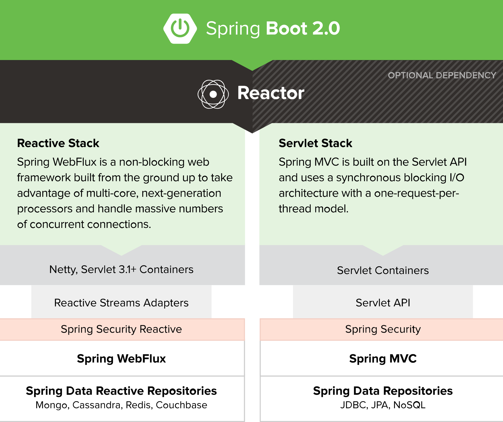

- 01 导读：课程概要.md.html
- 02 WebFlux 快速入门实践.md.html
- 03 WebFlux Web CRUD 实践.md.html
- 04 WebFlux 整合 MongoDB.md.html
- 05 WebFlux 整合 Thymeleaf.md.html
- 06 WebFlux 中 Thymeleaf 和 MongoDB 实践.md.html
- 07 WebFlux 整合 Redis.md.html
- 08 WebFlux 中 Redis 实现缓存.md.html
- 09 WebFlux 中 WebSocket 实现通信.md.html
- 10 WebFlux 集成测试及部署.md.html
- 11 WebFlux 实战图书管理系统.md.html
- 捐赠
01 导读：课程概要
背景
大家都知道，Spring Framework 是 Java/Spring 应用程序跨平台开发框架，也是 Java EE（Java Enterprise Edition） 轻量级框架，其 Spring 平台为 Java 开发者提供了全面的基础设施支持，虽然 Spring 基础组件的代码是轻量级，但其配置依旧是重量级的。
那是怎么解决了呢？当然是 Spring Boot，Spring Boot 提供了新的编程模式，让开发 Spring 应用变得更加简单方便。本课将会由各个最佳实践工程出发，涉及 Spring Boot 开发相关的各方面，下面先了解下 Spring Boot 框架。
Spring Boot 是什么
Spring Boot（Boot 顾名思义，是引导的意思）框架是用于简化 Spring 应用从搭建到开发的过程。应用开箱即用，只要通过一个指令，包括命令行 java -jar、SpringApplication 应用启动类、Spring Boot Maven 插件等，就可以启动应用了。另外，Spring Boot 强调只需要很少的配置文件，所以在开发生产级 Spring 应用中，让开发变得更加高效和简易。目前，Spring Boot 版本是 2.x 版本。

Spring Boot WebFlux 是什么
可以看到上面的图，WebFlux 相对 MVC 一样重要。大多数场景使用 MVC 都是阻塞式的，WebFlux 使用的场景是异步非阻塞的，那什么是响应式编程（Reactive Programming）？
官方文档这样描述：响应式编程是基于异步和事件驱动的非阻塞程序，只是垂直通过在 JVM 内启动少量线程扩展，而不是水平通过集群扩展。
Spring Boot 2.0 包括一个新的 spring-webflux 模块，该模块包含对响应式 HTTP 和 WebSocket 客户端的支持，以及对 REST、HTML 和 WebSocket 交互等程序的支持。
为什么学习 Spring Boot WebFlux
- 微服务架构越来越火，Spring Boot 是一大趋势，因为 Spring Cloud 是基于 Spring Boot 的，所以学好 Spring Boot WebFlux 会受益匪浅。
- 从编程来讲，虽然阻塞式编程是避免不了的，但是 Reactive 编程在大多数场景，能够提高资源利用率。所以，学习 WebFlux，尤其某些 IO 密集型场景很刚需。
本课程可以学到什么
本课程是一个系列基础教程，目标是带领读者上手实战，课程以新版本 Spring Boot 2.0 WebFlux 的核心概念作为主线。围绕 Spring Boot 2.0 WebFlux 技术栈的系列教程，目标是带领读者了解 Spring Boot 2.0 WebFlux 各种特性，并学会使用 Spring Boot 相关技术栈上手开发项目。尤其对于微服务下，如果是 IO 密集型等场景，可以考虑使用 WebFlux 去实现。
主要包含知识点：快速入门、CRUD 、MongoDB Reactive、Thymeleaf、Redis、WebSocket 等，一步一步了解每个组件的使用方式，最后综合演练。
认真学完这个系列文章之后，会对 Spring Boot 2.0 WebFlux 有进一步的了解，具备使用 Spring Boot 2.0 WebFlux 上手进行开发的基本能力。
我早期写的文章可以看我的 GitHub。
适合阅读的人群
本 GitChat 课程适合以下人群阅读：
- Spring Boot 2.0 WebFlux 新版本的初学人员
- 对 Spring Boot 2.0 WebFlux 开发感兴趣的开发人员
- 希望了解 Spring Boot 2.0 WebFlux 的研发人员
版本使用 Spring Boot 2.0.1.RELEASE 版本进行开发演示，技术人员需要具备 Maven、Git 基本技能。
开发运行环境：
- JDK 1.8 + Spring Boot 2.x 要求 JDK 1.8 环境及以上版本。另外，Spring Boot 2.x 只兼容 Spring Framework 5.0 及以上版本。
- Maven 3.2+ 为 Spring Boot 2.x 提供了相关依赖构建工具是 Maven，版本需要 3.2 及以上版本，使用 Gradle 则需要 1.12 及以上版本。Maven 和 Gradle 大家各自挑选下喜欢的就好。
- IntelliJ IDEA IntelliJ IDEA （简称 IDEA）是常用的开发工具，也是本书推荐使用的，同样使用 Eclipse IDE 自然也是可以的。
开发使用框架：
- MongoDB
- Redis
- Thymeleaf
- WebSocket
© 2019 - 2023 Liangliang Lee. Powered by gin and hexo-theme-book.